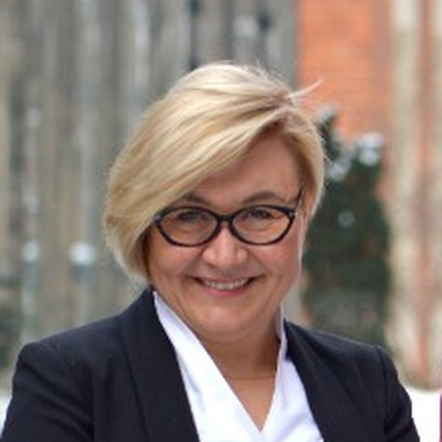
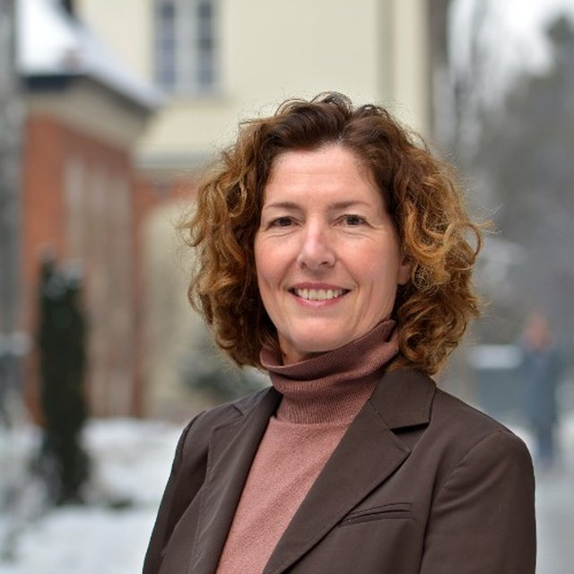
prof. dr inż. Marie-Claude Dubois
Uniwersytet w Lund
dr inż. Niko Gentile
Uniwersytet w Lund
dr hab. inż. arch. Karolina Krośnicka
Politechnika Gdańska

prof. dr inż. Jérôme Kämpf
Idiap Research Institute
dr hab. inż. arch. Izabela Mironowicz
Politechnika Gdańska

dr hab. inż. Maciej Tankiewicz
Gdański Uniwersytet Medyczny
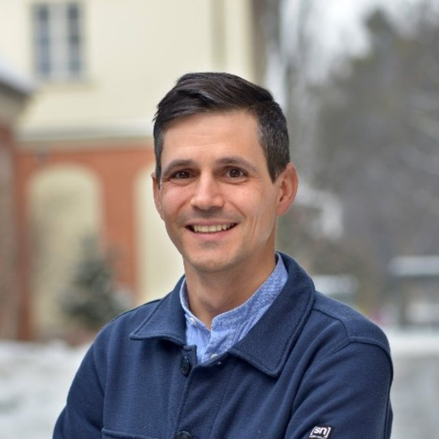
dr inż. David Geisler-Moroder
Uniwersytet w Innsbrucku
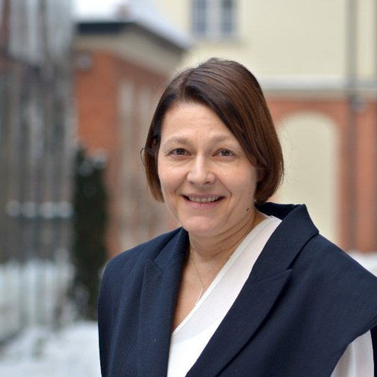
dr inż. Natalia Sokół
Politechnika Gdańska
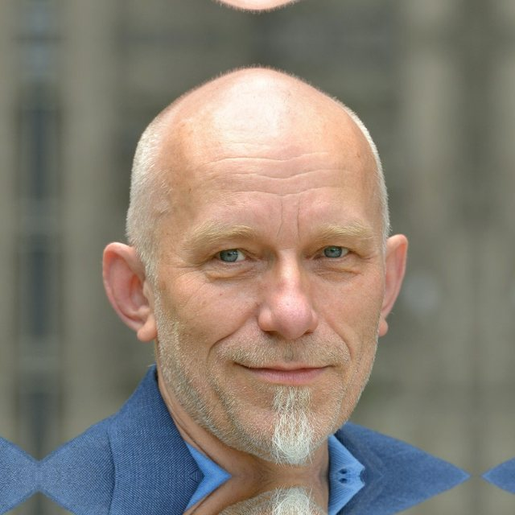
dr inż. arch. Roman Ruczyński
Politechnika Gdańska

dr inż. Nikodem Derengowski
Politechnika Gdańska
mgr inż. Anna Zackiewicz
Politechnika Gdańska

dr hab. Anna Wojewnik-Filipkowska
Uniwersytet Gdański

dr inż. Agnieszka Fiszka Borzyszkowska
Gdański Uniwersytet Medyczny

dr Monika Cieszyńska-Semenowicz
Gdański Uniwersytet Medyczny

dr Aleksandra Dydecka
Gdański Uniwersytet Medyczny
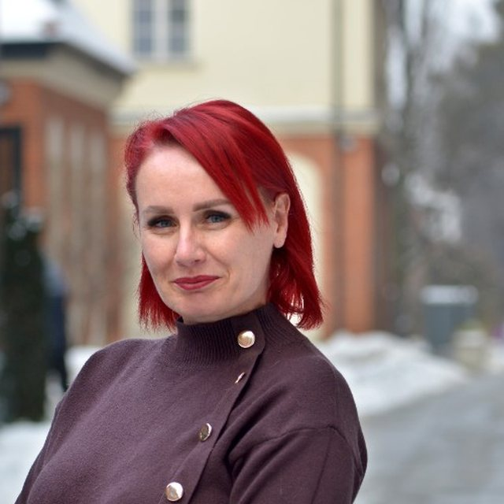
dr inż. Aleksandra Koszarek-Cyra
Uniwersytet Gdański

dr Olga Martyniuk
Uniwersytet Gdański
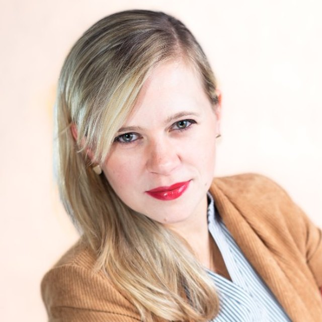
dr inż. arch. Weronika Maria Mazurkiewicz
Politechnika Gdańska
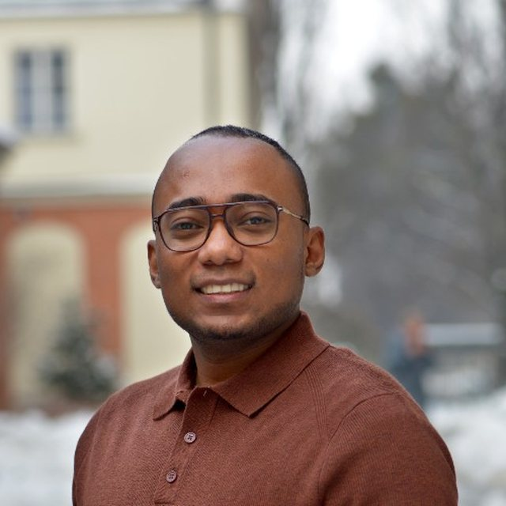
dr inż. Dubon Rodrigue
Idiap Research Institute

dr Gracja Topka-Bielecka
Gdański Uniwersytet Medyczny
dr inż. arch. Barbara Zgórska
Politechnika Gdańska
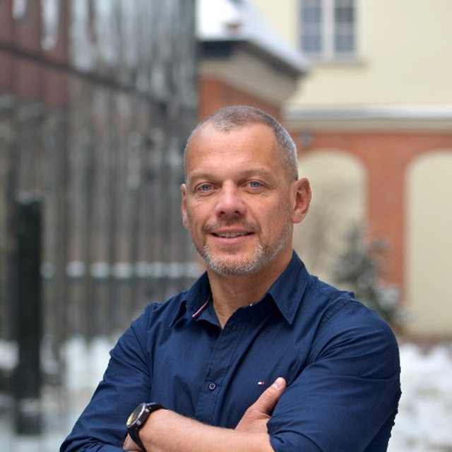
Przemysław Kluz
Gdańska Fundacja Innowacji Społecznych
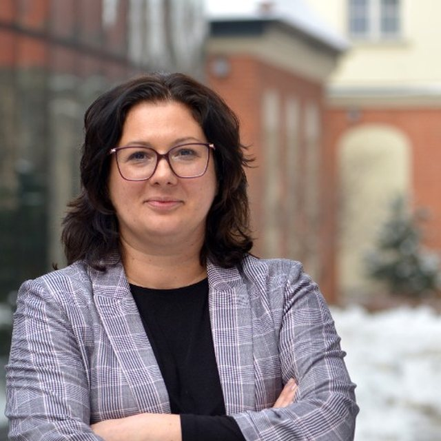
Natalia Lekner
Gmina Kartuzy

Karol Niciejewski
Gdański Uniwersytet Medyczny
Ewa Patyk
Gdańska Fundacja Innowacji Społecznych
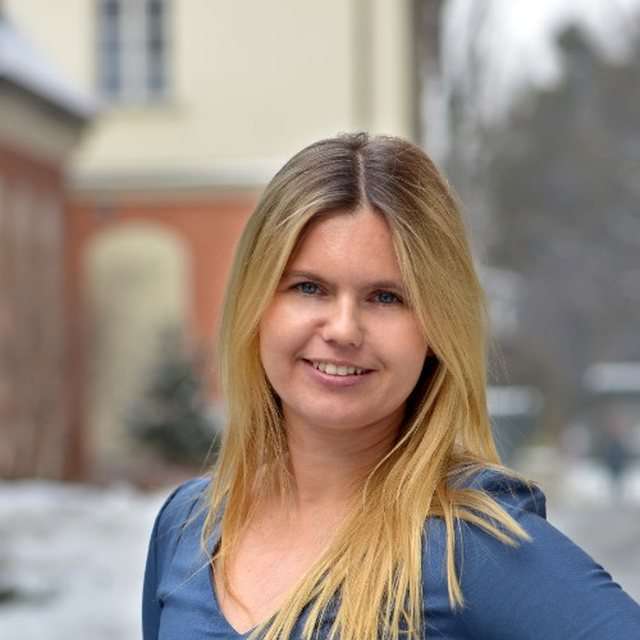
mgr inż. Aleksandra Szewczyk
Foton-OZE
Lista może się jeszcze powiększyć. Kolejne osoby dopiszemy razem ze zdjęciem i instytucją.